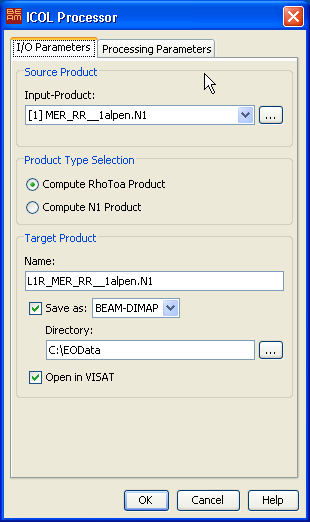
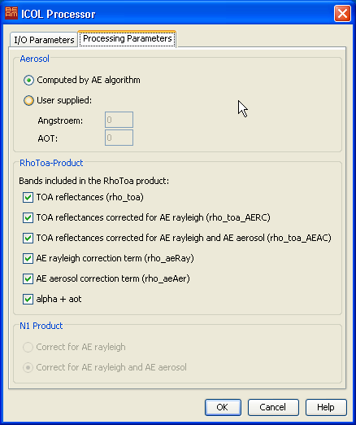

| ICOL Processor | |
In MERIS images an increase in the radiances, especially in the near infrared bands, can often be observed over water and in the vicinity of vegetated coasts. The affected area can extend over 10km or even more. This increase is not (always) related to an increase in the aerosol optical depth but is caused by the so-called adjacency effect. This effect results when photons are reflected and scattered towards the sensor and where a substantial contrast exits between the target and its surrounding. During processing of such measurements the correction schemes need to take this effect into account, otherwise the increased radiance is erroneously associated with other physical processes, and the derived geophysical quantities have an increased error.
Observations over waters near to land surfaces, both for coastal and inland waters, are affected because of the large contrast in the red and infrared part of the spectrum, where water is almost black and vegetated areas are very bright. The effect is easier to illustrate in coastal waters because it decreases from coastline to off-shore. This effect can best be studied in MERIS Full Resolution images, but even in reduced resolution the adjacency effect can also clearly be seen.
The ATBD can be found in the BEAM wiki. (http://www.brockmann-consult.de/beam-wiki/display/BEAM)
The ICOL Processor starts from MERIS L1b products and corrects for the adjacency effect. The format and content of the output product depends on the format of the input product: If the input product is in Envisat-N1 format. The processor can write either a new Envisat-N1 file with corrected radiances or a product with corrected TOA reflectances in any available BEAM output format, currently these are BEAM-DIMAP, GeoTIFF and HDF5. If the source product is not in Envisat-N1 format only corrected reflectances in BEAM supported output files are possible.
If as the selected output product is in Envisat-N1 format, it is accompanied by a product in BEAM-DIMAP format with the identical content.
The ICOL Processor can be invoked from VISAT's tool menu by selecting the ICOL Processor command
or in batch mode by using the command line tool gpt (Graph Processing Tool) found
in BEAM's bin directory:
Type gpt IcolRhoToa -h to get more information about
the usage of the IcolRhoToa operator or gpt IcolN1 -h to get more information about
the usage of the IcolN1 operator.
The IcolN1 operator is only applicable on input products in Envisat-N1 format and computes corrected radiances, whereas the IcolRhoRoa operator can work on any MERIS L1b product.
Please note: Because the ICOL Processor requires a lot of memory, you should set in the Preferences on the "Image Layer" page the property for "Tile cache capacity" to at least 750MB.
The graphical user interface provided in VISAT appears as follows:

Input-Product: Used to select the source product. The source product shall be a MERIS L1b product. Use the ... button to open a data product currently not opened in VISAT.
Product Type Selection: Used to select the type for the output product. If applicable this can be either RhoToa for corrected reflectances or N1 for corrected radiances.
Name: Used to specify the name of the target product.
Save to: Used to specify whether the target product should be saved to the file system. The combo box presents a list of file formats, currently BEAM-DIMAP, GeoTIFF and HDF5, if the input product is not in Envisat-N1 format and only N1 otherwise.
Open in VISAT: Used to specify whether the target product should be opened in VISAT. When the target product is not saved, it is opened in VISAT automatically.

Computed by AE algorithm: If this option is selected the angstroem factor and the aerosol optical thickness will be calculated by the the adjacency algorithm.
User supplied: Used to specify the angstroem factor and the aerosol optical thickness at 865 nm.
For the RhoToa product the bands included in the output product can be specified in this group. The available options are:
TOA reflectances: The radiances from the MERIS L1b converted into reflectances, without any correction applied.
TOA reflectances corrected for AE rayleigh: The radiances from the MERIS L1b converted into reflectance, corrected for the rayleigh contribution to the adjacency effect.
TOA reflectances corrected for AE rayleigh and AE aerosol: The radiances from the MERIS L1b converted into reflectance, corrected for the rayleigh and the aerosol contribution to the adjacency effect.
AE rayleigh correction term: The contribution of the rayleigh to the adjacency effect.
AE aerosol correction term: The contribution of the aerosol to the adjacency effect.
alpha + aot: The angstroem coefficient and alpha.
For the N1 product it can be configured if the radiances are correct only for the contribution of the rayleigh to the adjacency effect or for the contribution of both, the rayleigh and the aerosol.